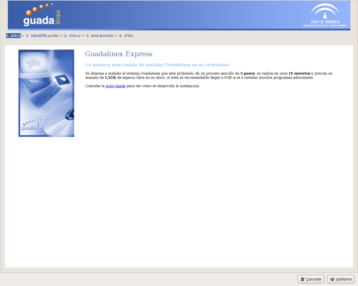
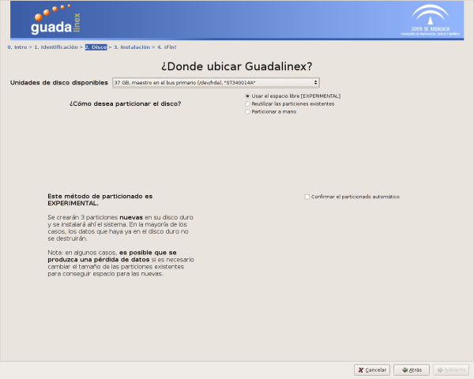
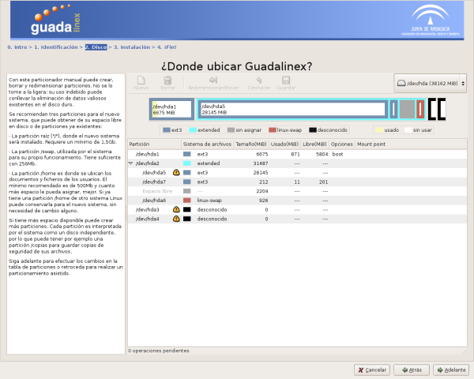
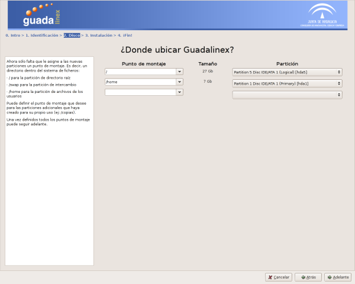
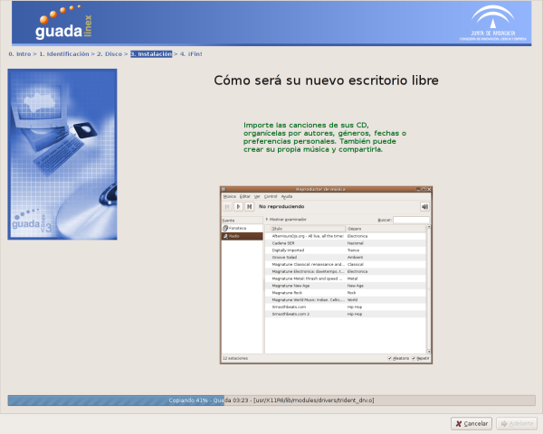
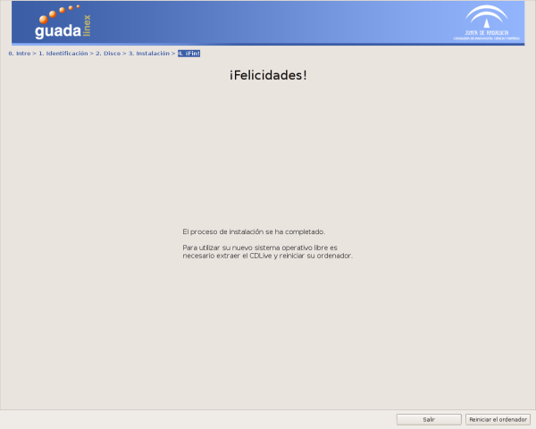

0. Intro
La página que acaba de visitar.
Información básica, enlace a esta guía e inicio del proceso de instalación.

1. Identificación
Introduzca su nombre completo, nombre de usuario,
contraseña y el nombre de su ordenador.
El usuario que introduzca durante la
instalación tendrá privilegios de administración, que le permitirán – con la
herramienta adecuada y siempre con advertencia previa – crear y BORRAR
usuarios y grupos, activar o detener servicios, instalar nuevos programas,
cambiar la fecha y hora y otros parámetros de su ordenador. Un usuario con
privilegios de administración es necesario para mantener adecuadamente el
ordenador, aunque pueda realizar operaciones potencialmente destructivas. Si
va a compartir su ordenador con personas poco dadas a la prudencia, como
pueden ser niños o niñas de corta edad, es mejor que les asigne posteriormente
un usuario que no posea privilegios de administración.
2. Disco
El instalador intenta encontrar automáticamente el
espacio de disco necesario para su nuevo sistema.

Puede organizar su espacio de disco
manualmente, si lo prefiere.

En tal caso, tendrá que indicar en
qué partición desea instalar cada parte del sistema.

3. Instalación
Aproximadamente 15 minutos de copia
automática de archivos. Puede saber más sobre el sistema que se está
instalando a través de una presentación visual simultánea. O puede levantarse
e ir a tomar algo.

4. ¡Fin!
Fin de la instalación. Retire el CD o
DVD, reinicie su ordenador y empiece a disfrutar de Guadalinex.
